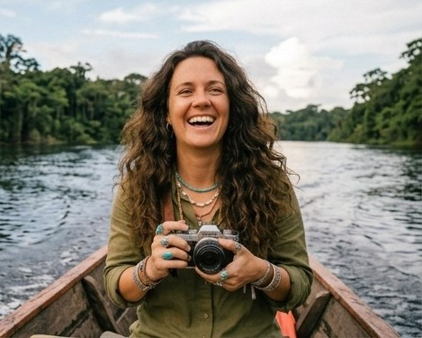

A Viagem Mística nasceu de uma certeza: o verdadeiro patrimônio do Brasil não está nos pontos turísticos de cartão-postal, mas nas histórias, ritmos e energias do nosso povo. Criada para quem quer ir além do turismo comum, a agência transforma viagens pelo território nacional em jornadas vivas de conexão e cultura.
Em vez de roteiros engessados, a Viagem Mística desenha rotas com alma. Na Bahia, o viajante sente a força dos tambores e o acolhimento das rezadeiras; na Amazônia, navega rios ao lado de ribeirinhos e aprende sobre o poder das plantas da floresta. Nas Chapadas do Centro-Oeste, o foco é a cura e o misticismo do cerrado, enquanto no interior do Sul e Sudeste, o encanto vem do café passado no fogão a lenha, do artesanato de raiz e dos causos contados no topo da serra.
Respeitando o tempo de cada comunidade e valorizando os mestres da cultura popular, a Viagem Mística pratica um turismo consciente, afetivo e regenerativo. No fim das contas, a agência não vende apenas passagens ou destinos — ela entrega encontros transformadores com a verdadeira essência do Brasil.

A trajetória da Viagem Mística confunde-se com a vida de Clara, fundadora e alma por trás da agência. Filha de um caminhoneiro e de uma professora, ela cresceu cruzando as estradas do país nas férias e alimentando, desde a infância, o sonho de mostrar ao mundo a verdadeira magia da cultura brasileira.
Atualmente, Clara atua como diretora executiva e curadora principal de expedições da agência. É ela quem percorre pessoalmente o Brasil para mapear novos destinos, firmar parcerias com comunidades locais, mestres da cultura popular e guias tradicionais, garantindo que cada roteiro continue entregando viagens autênticas, conscientes e transformadoras.